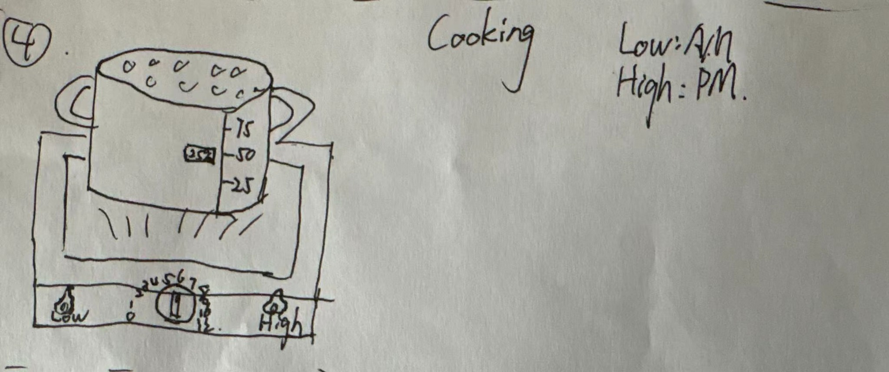

Context
Kitchen and cooking routines, especially when the user needs quick information while cooking.
IMT 561 · Data Visualization: Design and Development
A portfolio documenting 10 hand-drawn sketch concepts, two coded p5.js clock prototypes, and the final selected rice cooker clock.
Final Direction
A cooking-centered smartwatch face that combines exact time, rice-cooking progress, and AM/PM state in one appliance metaphor.
Portfolio Introduction
I am a Master of Science in Information Management student at the University of Washington. My interests include data visualization, information systems, machine learning, and interactive design. In this portfolio, I document my HWK 4 process from early sketching to coded p5.js prototypes.
For this assignment, I chose a kitchen and cooking context because cooking is a daily activity where time matters, but users often need information that is fast, glanceable, and easy to understand while their hands are busy.
Assignment Theme
HWK 4 asks us to rethink how time can be represented beyond a standard analog or digital clock. My context is a cooking-focused smartwatch clock. The watch belongs in the kitchen, where time is connected to waiting, preparing ingredients, checking food readiness, managing several dishes, and remembering leftovers.
My information visualization goal is to map abstract time into familiar kitchen signals such as steam, rising rice, cracking eggs, progress arcs, heat levels, checklist completion, and urgency labels. These visual metaphors make time feel more physical and more connected to cooking behavior.
Kitchen and cooking routines, especially when the user needs quick information while cooking.
People who cook casually at home and want a playful but useful smartwatch timer or clock.
Time is encoded through height, progress, color, motion, labels, and appliance states.
Buttons, clicks, keyboard input, and hover feedback make the clocks feel responsive and alive.
Sketch Documentation
I sketched 10 different kitchen smartwatch clock concepts. The goal was to explore multiple ways of making time visible through cooking actions rather than simply reproducing a normal clock face.





Coded Clock 1
The Egg Timer is designed for short kitchen countdowns such as boiling eggs, steeping tea, or timing a quick cooking step. The remaining time is shown both as a numeric countdown and as a visual story: the egg cracks near the end, then hatches when the timer reaches zero.
I chose an egg because it is familiar, playful, and directly connected to cooking. The arc gives a clear progress structure, while the cracking animation creates urgency as the countdown approaches zero. Buttons and keyboard input allow the user to start, pause, reset, and adjust the timer.
This prototype works well as a playful countdown timer, but it is more limited than the Rice Cooker Clock because it mainly represents one task. If I continued, I would add presets for soft-boiled, medium, and hard-boiled eggs.
Coded Clock 2
The Rice Cooker Clock is a kitchen smartwatch face that uses a rice cooker as the main metaphor. It combines exact time, cooking progress, and AM/PM state in one appliance-like interface.
I moved from a simple kitchen object sketch toward a more information-rich appliance clock. The rice height became a progress visualization, the digital display keeps the exact time readable, and the LOW/HIGH control turns AM/PM into a cooking-related heat cue.
The clock includes small interactions such as click-triggered steam or timer controls, making it feel responsive while still matching the cooking context.
Final Selection and Rationale
I implemented two sketches in code: the Egg Crack Timer and the Rice Cooker Clock. I selected the Rice Cooker Clock as the final prototype because it feels more specific to daily cooking and has a stronger information visualization structure.
The Egg Timer is clear and playful, but it mainly supports one countdown scenario. Its main data relationship is remaining time to completion. This makes it effective, but narrower as a cooking smartwatch concept.
The Rice Cooker Clock combines exact clock time, cooking progress, and AM/PM state in one consistent kitchen appliance metaphor. The screen shows the current time, the rice level shows progress, and the LOW/HIGH control turns AM/PM into a cooking-related heat cue.
It is not only a countdown. It works as a broader kitchen clock for checking time, food readiness, and cooking status at a glance. Its visual mapping is stronger: rice height represents progress, color and labels show AM/PM state, motion makes the scene feel alive, and the digital display keeps time readable.
Static rice block → time-based rising rice level.
Add rice level progress visualization
AM/PM text → LOW/HIGH rice cooker heat control.
Map AM PM state to rice cooker heat control
Static steam → click-triggered extra steam.
Add click interaction for extra steam
If I continued improving the final artifact, I would make the design more responsive for smartwatch-sized screens, add real cooking presets such as rice, soup, tea, and eggs, and improve accessibility by increasing contrast and adding clearer labels for users who may not immediately understand the metaphor.